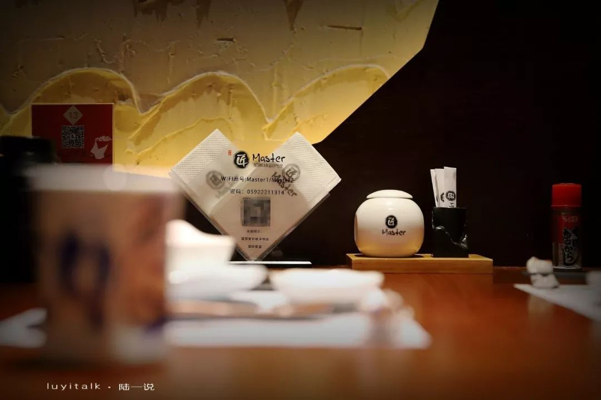

匠和风 | 春意浓，温酒浅尝，度一晚好春光
这次来的是 匠 的第二家分店，位于世茂双子塔四层，从A栋地库的电梯直达，出门左侧便是。这里简直是一个日料的小天地，有寿司、拉面、本土日料老品牌等。不过，匠和风 简洁大方、朴素别致的风格还是挺吸引眼球的！
匠和风因为靠近电梯口，位于拐角处，面向中庭的黑砖墙错落有致，带着一点点低调和内敛，神秘与质感，回头率颇高。门口迎宾有一处光亮的背景墙，醒目却不突兀。正对门脸儿的是收银，左侧长长的料理台，中庭隔断围方的用餐区，周边绕着一圈4人位。头顶的吊灯统一做成了木质的罩框，深色木条隔断，空间紧凑而规整。在最靠里的位置还安排了包间和几处安静的榻榻米，在春意渐浓时深藏于此，温壶小酒，浅酌几杯，度一晚好春光！
<左右滑动查看更多美图>
世茂的匠和风延续一贯的价位和出品。午助188元/位，晚助218元/位，同时提供单点和定食，可以满足不同需求。

前菜拼盘 延续老三样，韩国泡菜、中华海草和干贝唇边，每一小蝶我都喜欢。
红酒鹅肝 上桌时是冒着“仙气”的，造型隆重。一入口，微微的酒香渗透，鹅肝贴服在舌尖，那丝冰爽绵软让人一时忘记了所有顾虑，正如那谁说了：今朝有肝今朝消，待她消融我还要！
龙虾珍味 这道色彩明亮，颜值奇高。腰果、鱼子酱、虾肉美味组合，闪亮的铁勺隔在翠绿与金黄之间，口感咸、甜、香、脆，和谐而诱人。
午鱼一夜干 午鱼对切煎至表面微焦，油脂微微的在表皮闪亮，肉质细腻，嫩嫩的，油油的，口感恰好。
刺身拼盘 这是点自助的小伙伴一般都少不了的一道。三文鱼、北极贝、甜虾、金枪鱼、冰镇海螺汇聚一盘上桌，整体表现尚可。三文鱼厚切，美妙的口感对得起粉嫩的外表；甜虾鲜甜；金枪鱼取的部位是鱼背，北极贝和海螺品质都不错。
赤贝、生蚝 均可单点，不忌口的小伙伴一定不要错过的！
蒲烧鳗、酥炸榴莲、综合炙烧寿司、牛肉蒲叶烧 均在我的推荐之列！
羊排烧、鲍汁扣鹅掌 口感也都不错！
而 芥末章鱼 初试感觉太过霸道，但不知不觉的就习惯了，还发现爱上了！
甜品是经典的焦糖布丁、杨枝甘露，品质和出品一点不含糊，饮品有奇异果汁、玉米汁！
菜品真的很丰富，我们还点了 牛油果沙拉、蛋黄酱焗车虾、厚切猪排、铁板鹅肝、焗蟹宝、河豚鱼干土瓶蒸 等。难怪有小伙伴说，很容易吃回本的！我赞同！

<左右滑动查看更多美图>
我们姑且不说“不时不食”，不说食器精美，不说服务暖心，单从离店后回想的第一感觉出发，匠和风 环境静雅、东西尚可、选择颇多、性价比不错！定食、单点、自助，工作餐、约会、小聚 均可满足。可以说是能让大多数小伙伴满意的日料了！
虽可单点，我还是建议选择自助
敞开吃，会很满足的
怎么样？想去吗？
厦门湖里万达店 电话： 0592-5518266
厦门世茂双子塔店 电话： 0592-2211314
福州台江万达店 电话：0591-88359090
福州仓山万达店 电话：0591-87717355
莆田正荣财富中心店电话：0594-2739900
泉州万达店 电话：0595-28686198
晋江万达店 电话：0595-82155917
三明万达店 电话：0598-8251717
 330445074@qq.com
330445074@qq.com 12345
12345